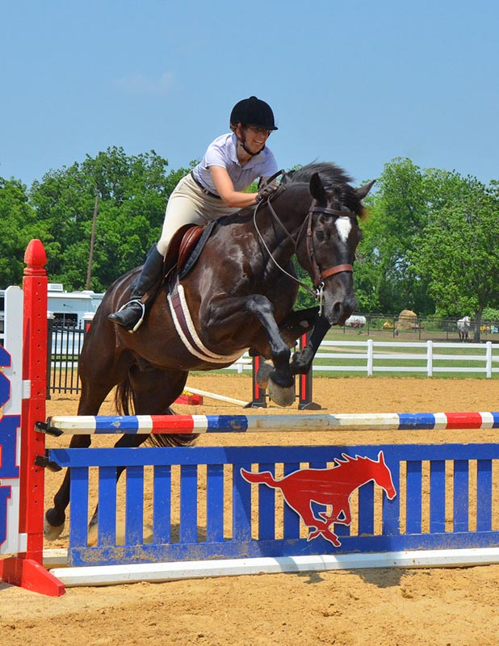

5/26/2013
Jumpers at Buckbranch
We had fun at a jumper show this weekend. He was a bit lazy once we started,
but no refusals or knock downs in any of our classes.
We entered the 3' division and won one class and got a 2nd and 3rd in the others.
This gave us reserve champion for the division.
After a rest, and watching the warm up for 3'3", the jumps didn't look that much bigger.
With Meg's blessing we went in the first class of that division and ended up winning.
He rubbed the first two to notice they were higher, and then nicely gave the extra effort.
Having pictures was great to see where we need to improve.
The nerves weren't bad until right before going in. Memorizing all the courses stresses me.
Still, we didn't go off course (last jumper show I forgot the course in one jump off)
and after the first course I remembered to tell him we were turning as we were going over the jumps.
He really seems to appreciate knowing beforehand.
Not looking down, but not looking up. I do like my release and flat back.
I see jumps like this and don't remember feeling loose or awkward. From the picture
it looks a bit like I'm trying to dismount as we're going over
the fence. Really
it's me asking him to turn left. Opening left rein, dropping weight and shoulders
to the left and putting my right leg back. I think it would be better if I didn't
try so hard to 'help' him. Guess how many turn-on-landing jump lessons I'm going
to get after my trainer sees this.
But at the next fence we're both organized and back together.

I was trying to urge him for speed, but I don't want him to get flat. Impulsion
is really what we want, but that's a work in progress.
I like my inside leading rein for the turn, but Bart says it looks like I'm leaning
over to whisper in his ear that we need to turn left. Dropping that shoulder helps
no one.
When the jumps are straight ahead I'm pretty pleased with our form.
I know the outside rein looks a bit tight, but I'm pushing him around and not just
using the inside rein. As tight as this turn needed to be I had
to start communicating
what was happening before we landed. We're learning that staying balanced, but looking
where we're going tends to communicate this as well as what I was doing this day,
but Miaren wasn't offended by my riding.
This was typically off a tight turn, but he was very good about meeting it in stride.
Stupid pelham with two sets of reins. I dropped my right curb rein at the last fence
and hadn't gotten it back. You can see it in shadows looping around his neck. The
reins are so long that I worried about them tangling in his legs. Holding them away
from his neck seemed the best way to make the fence and keep them out of the way.
I think it looks a bit like I'm trying to fly over the fence with him. Good to know
I don't need that crest release for balance.
I didn't get my reins sorted in time, so I just grabbed them in my fist and held
onto mane. I was so delighted that there was no need to really guide him to the
last fence or do much in the way of riding. He wasn't happy with my lack of support.
I think he's saying I should be more focused on the job at hand and not so busy
worrying about those darn reins.
Much better in the jump off. Heels down, hips mostly back and focused ahead this
time.
By the last 3' jump off I wasn't being so extreme. Looking where we're headed
and trusting that Miaren would make the needed turn. No 3'3" pictures, but I'm guessing
it's a hole or so higher.